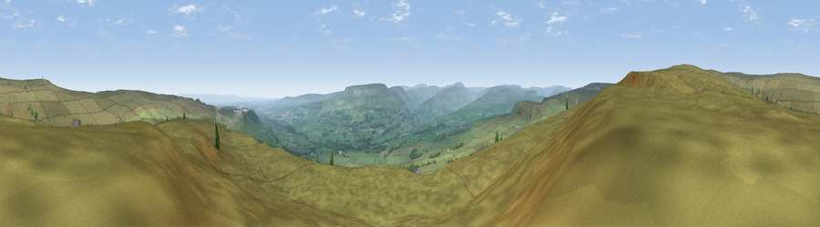

Viewpoint near Redmire
#7929 in England · top 11% of its area beats it · near Redmire · open accessWhere it is
The exact computed spot (SE 02025 93325). Click the marker for map links.
Public access: this spot lies on mapped open-access land (CRoW Act 2000) — you may roam here on foot. Computed from Natural England's CRoW access layer and OpenStreetMap rights of way — not the legal definitive map. Always verify locally.
The view, rendered

A 360° render of this exact spot computed from the terrain model, tree cover and land cover — summer colours, afternoon light, calibrated against photographs of famous viewpoints. Real trees, hedges and buildings will differ in detail.
The panorama
Grey silhouette: terrain skyline in each direction (720 bearings, Earth curvature and refraction included). Dashed green: skyline with trees (+15 m) and buildings (+8 m) as obstacles. Blue strip: how far the ground is visible on each bearing.
Where the view opens
Wedge length = distance to the farthest visible ground on that bearing (vegetation-aware). Rings at 10, 25 and 50 km.
What fills the view
95% grassland · 3% woodland · 1% cropland
Angular shares of the visible panorama (visual magnitude), not map area. Landscape diversity 0.10 (0–1 Shannon).
Key numbers
More beautiful places nearby
The staircase of upgrades: each row has a higher view potential than everything closer. Driving times are estimates from straight-line distance, calibrated against real road routing — check an actual route before setting out.
| Place | Direction | Drive | Score |
|---|---|---|---|
| Greets Hill | NNE · 3 km | ~6 min | 69.0 |
| Viewpoint near Marrick | ENE · 5 km | ~11 min | 70.5 |
| Whit Fell | E · 7 km | ~14 min | 70.7 |
| Viewpoint near West Burton | SSE · 7 km | ~15 min | 73.2 |
| Viewpoint near West Witton | SSE · 7 km | ~15 min | 75.5 |
| Viewpoint near East Witton | SE · 15 km | ~26 min | 77.8 |
| Whernside | WSW · 30 km | ~47 min | 79.9 |
| Viewpoint near Kirby Knowle | E · 44 km | ~64 min | 80.5 |
54.33548, -1.97036 · source: screening · position refined by local search. Computed location — check access rights before visiting.